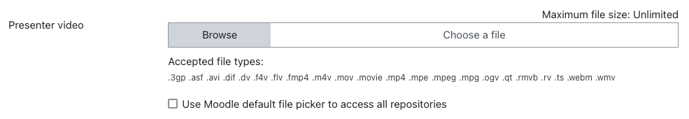

Opencast chunkupload plugin
The Chunkupload plugin enables users to upload video files to Opencast in smaller, manageable chunks. This approach bypasses the Moodle course upload size limit, allowing users to successfully upload large files without interruptions or failures due to size restrictions.
Installation
The Opencast Chunkupload plugin can be obtained from the following sources:
-
The GitHub repository, which provides the latest releases, source code, Roadmap and current developments.
-
The Moodle plugins directory, offering a convenient "Official" installation package directly within Moodle.
Requirements
To ensure the proper functioning of the Opencast Chunkupload plugin, the following requirements must be met:
- Minimum Moodle Version: 3.7
- Opencast Videos block (block_opencast): This plugin must be installed and properly configured to enable chunked video uploads.
Configuration
For detailed configuration instructions, refer to the settings page.
Chunkupload in Action
Once the plugin is installed and correctly configured, users will see a new chunked file uploader element available exclusively on the "Add video" page. The uploader interface appears as shown below:
